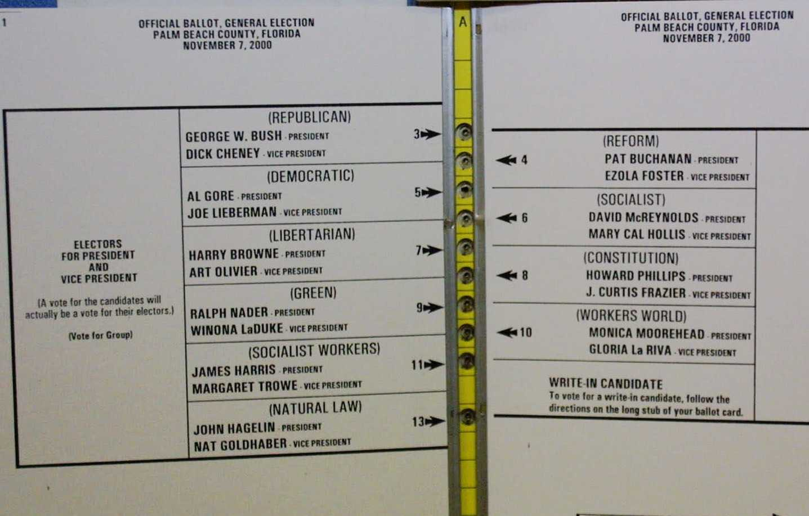
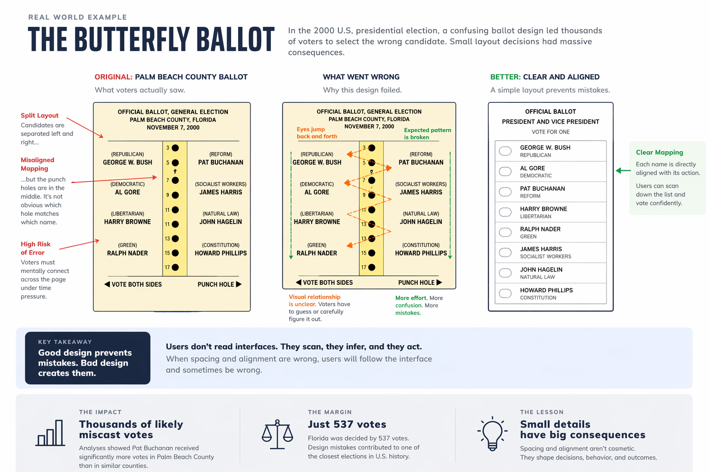

Bad Design Has Real Consequences
Often, design mistakes are harmless:
- A button is slightly misaligned
- A label is a little unclear
The worst outcome is usually frustration.
But sometimes, design mistakes don't just frustrate users. They change outcomes.
In the 2000 U.S. presidential election, thousands of voters in Palm Beach County (FL) cast votes for a candidate they did not intend to choose.
Not because they didn't understand the ballot.
Because the ballot was poorly designed.
A real-world example
The ballot used in Palm Beach County became known as the “butterfly ballot.”
Instead of a simple vertical list, candidate names were split across two sides, with punch holes arranged in a single column down the center.
At a glance, it looked organized. In practice, it broke a fundamental rule of interface design:
The relationship between a label and an action must be visually obvious.
Voters had to map names on the left and right to punch holes in the middle — a task that required careful interpretation under time pressure.
And the result was measurable.
In Palm Beach County:
- Pat Buchanan, a third-party candidate running with the Reform Party, received 3,411 votes
- In neighboring Miami-Dade (with a larger population), Buchanan received just 561 votes

This was not a subtle difference.
Nationally, Buchanan received about 0.4% of the vote. But Palm Beach County alone accounted for nearly 1% of his entire national total.
Many analysts concluded that thousands of these votes were likely cast by mistake, with voters intending to select Al Gore.
The final margin of victory in Florida?
537 votes.
What went wrong
The issue wasn't intelligence. It was mapping.
Good interfaces rely on spatial relationships:
- Labels are aligned with the actions they control
- Related elements are grouped together
- The visual layout matches the user's expectations
The butterfly ballot violated all three.
- Candidate names were not directly aligned with their punch holes
- The eye had to jump left and right across the page
- The expected top-to-bottom scanning pattern was broken
Under ideal conditions, users might recover from this.
But voting is not an ideal condition. It's a constrained, high-stakes environment where users must act quickly and confidently.
When the layout suggests the wrong mapping, users don't stop and analyze it. They follow it.

This isn't just about ballots
The same failure shows up in everyday software:
- A checkbox that isn't clearly aligned with its label
- A button placed too far from the content it affects
- A table where columns drift and lose association with their headers
- A form where inputs and labels don't form clear pairs
Individually, these seem minor. But they all create the same problem:
They force the user to interpret the interface instead of trusting it.
And when users have to interpret, they will sometimes be wrong.
Users don't read interfaces
They scan. They infer. They act.
They rely on visual cues — alignment, spacing, proximity — to understand what belongs together and what to do next.
When those cues are wrong, the user's behavior will be wrong too.
Not because they failed — because the design did.
The real role of design
Spacing isn't about aesthetics. Alignment isn't about polish.
They are how an interface communicates structure. They are how it prevents mistakes.
And when they fail, the consequences aren't just slower workflows or minor frustration.
Sometimes, they are irreversible.
The lesson
Good design isn't about making things look better.
It's about making them harder to get wrong.
Because users will follow the interface you give them — whether it's correct or not.
— Dan Thoreson